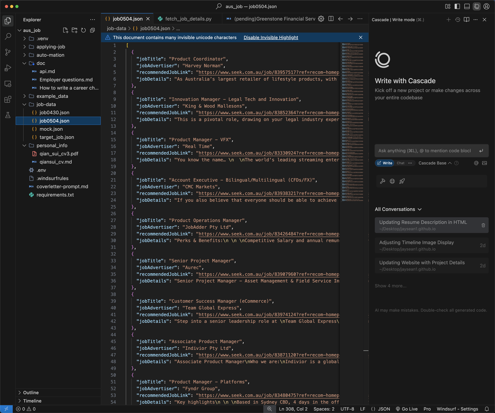

Sydney SEEK Job Automation
Use automation scripts and AI tools to greatly improve job search efficiency on the SEEK platform in Australia. Help both technical and non-technical people find jobs efficiently.
Sydney SEEK Job Automation: From Crawling Jobs to Smart Cover Letter Generation
This article shows how to use automation scripts and AI tools to greatly improve job search efficiency on the SEEK platform in Australia. It is suitable for people with a technical background, and non-technical people can also work with technical partners to achieve this.
Background
Next month, in June, I will move to Sydney, so I need to find a job there. After learning about online job sites in Sydney, I found seek.com.au, the largest job site in Australia. After uploading my resume, I quickly realized it is different from Chinese job sites. The biggest difference is that there are not many agents on SEEK. The job postings come directly from employers, and you need to apply by yourself, not just wait for headhunters to contact you.
Automated Job Search Process
Implementation Steps
1. Get Job List
Manually screening a large number of job postings on the SEEK homepage is very inefficient. So, I run a custom JavaScript script in the browser console to batch grab all job card titles, companies, and links. No API login or extra dependencies needed, just paste the script to export the job list in one click, which greatly improves the initial screening efficiency.
Tips: Since SEEK job info is dynamically loaded and requires login, it is recommended to use the browser console for quick batch data collection.
(function(){
// 1. 在这里填写本次页面的 class 名称
const classes = {
card: "gg45di0 _1ubeeig93 _1ubeeig7z _1ubeeigbb _1ubeeiga7 _1ubeeig5f w39xvk4 w39xvk5 w39xvk6",
jobTitle: "gg45di0",
jobAdvertiser: "gg45di0 _1ubeeig4z _1oxsqkd0 _1oxsqkd1 _1oxsqkd22 _18ybopc4 _1oxsqkda",
recommendedJobLink:"gg45di0 gg45dif gg45di0 gg45dif w39xvk9 _1ubeeig5j _1ubeeigj _1ubeeigk _1ubeeigl _1ubeeigm _1ubeeig7"
};
function sel(cls){ return "." + cls.trim().split(/\s+/).join("."); }
const cards = document.querySelectorAll(sel(classes.card));
const data = Array.from(cards).map(card => ({
jobTitle: card.querySelector('[data-automation="jobTitle"]')?.innerText.trim() || "",
jobAdvertiser: card.querySelector(sel(classes.jobAdvertiser))?.innerText.trim() || "",
recommendedJobLink: card.querySelector(sel(classes.recommendedJobLink))?.href || ""
}));
console.log(JSON.stringify(data, null, 2));
})();2. Get Job Details
After getting the job list, the next step is to batch get the detailed description of each job. Use Python requests with BeautifulSoup4 to simulate browser requests and parse HTML, accurately extracting job detail text.
Note: SEEK job detail pages are complex. First use the data-automation attribute to locate content, and if that fails, fall back to parsing JSON-LD. All results are written back to a local JSON file for later processing.
import json
import requests
from bs4 import BeautifulSoup
import os
# ... 省略部分代码 ...
for job in jobs:
url = job.get('recommendedJobLink')
try:
resp = requests.get(url, headers=HEADERS, timeout=10)
resp.raise_for_status()
except Exception as e:
print(f"Failed to fetch {url}: {e}")
job['jobDetails'] = ''
continue
soup = BeautifulSoup(resp.text, 'html.parser')
detail_div = soup.find(attrs={ 'data-automation': 'jobAdDetails' })
if detail_div:
job['jobDetails'] = detail_div.get_text(separator='\n').strip()
# ... 省略 ...
Job detail crawling example
Job detail page screenshot
3. Smart Job-Resume Matching & Scoring
With job details and my resume, use a large model API to smartly analyze the match between them. Each job is automatically scored (0-100) and a brief reason is given.
Highlight: Dynamic prompts allow you to update your resume content at any time, ensuring real-time and accurate matching results. Jobs with a score above 80 are automatically added to the target list, and you can generate a customized cover letter for them.
# ... 省略部分代码 ...
for job in jobs:
# ...
body = {
'model': 'qwen-plus-latest',
'messages': [
{'role': 'system', 'content': prompt_sys},
{'role': 'user', 'content': prompt_user}
]
}
resp = requests.post(url, headers=headers, json=body, timeout=30)
# ...
if score >= 80:
# 保存匹配结果
...Job-resume matching and scoring example
4. Auto Generate Cover Letter
For high-scoring jobs, automatically use a large model to generate a personalized cover letter. The prompt dynamically includes your resume, job details, and the official cover letter writing guide, making sure the content is professional and fits Australian job habits.
Advantage: The cover letter is fully generated automatically, with a clear structure and strong relevance, which greatly increases the chance of getting an interview. All results are saved as separate markdown files for easy follow-up and batch application.
# ... 省略部分代码 ...
for job in jobs:
# ...
body = {
'model': 'qwen-plus',
'messages': [
{'role': 'system', 'content': 'You are an expert in writing cover letters.'},
{'role': 'user', 'content': prompt}
],
'temperature': 0.7
}
resp = requests.post(url, headers=headers, json=body, timeout=30)
# ...
# 保存 cover letter
...Auto-generated cover letter example
Summary
With this automated process, I not only saved a lot of time screening and applying for jobs, but also made sure every cover letter is more personalized and targeted. In practice, some companies may have extra questions or use their own recruitment systems, so you can't always apply in bulk, but overall this process greatly reduces repetitive work.
For friends like me who want to find a job in Australia, especially those with a technical background, I strongly recommend using automation and AI tools. Even if you are not a programmer, you can work with technical friends to build your own job search assistant.
In the future, I plan to further optimize the scripts, such as automatically detecting job changes and reminding interview progress. If you are interested in this topic, feel free to leave a comment or discuss more possibilities for automated job search!
I hope this article gives you some inspiration and help in your job search. Wish you all get your ideal offer!
Thanks for reading! If you have any questions or suggestions, feel free to leave a comment.